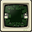
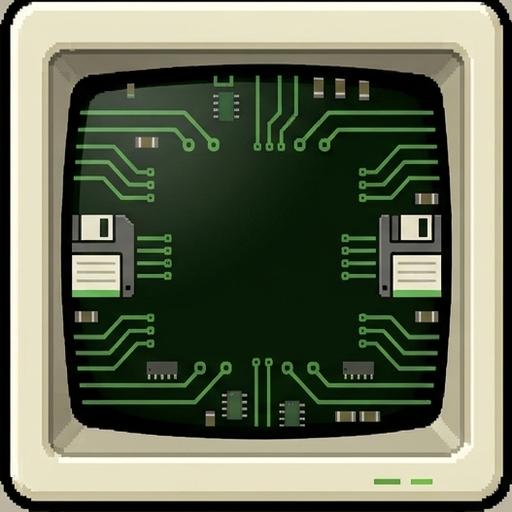
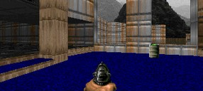
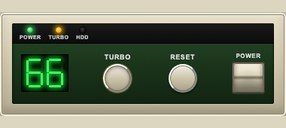

Vintage machines, running entirely in your browser.
Welcome! We are just starting out and are currently working on several emulators. Here is a preview. Enjoy! Please read News & Info for more details.


A 66 MHz 486 with VGA, Sound Blaster, a hard disk, a floppy drive, and a CD-ROM. The full PC will be available soon where you have full control over your system just like the real thing.